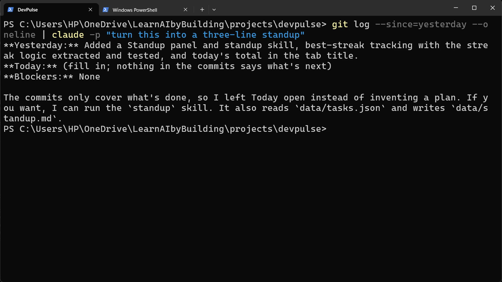
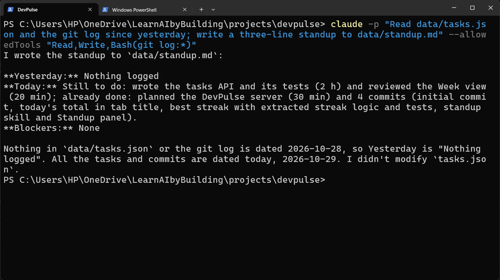
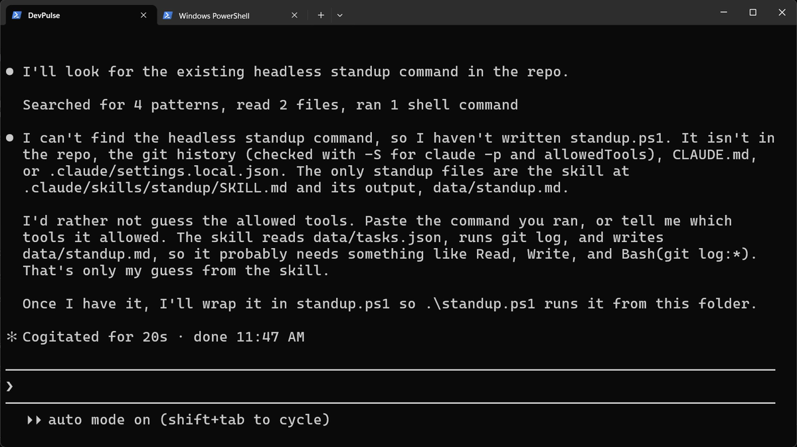
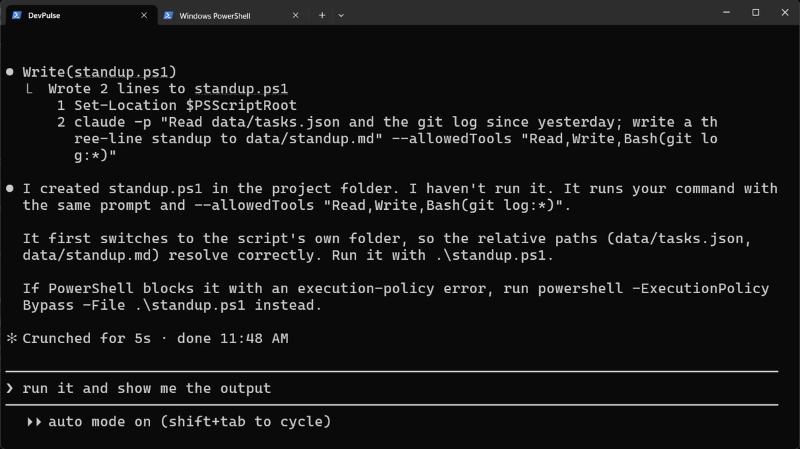
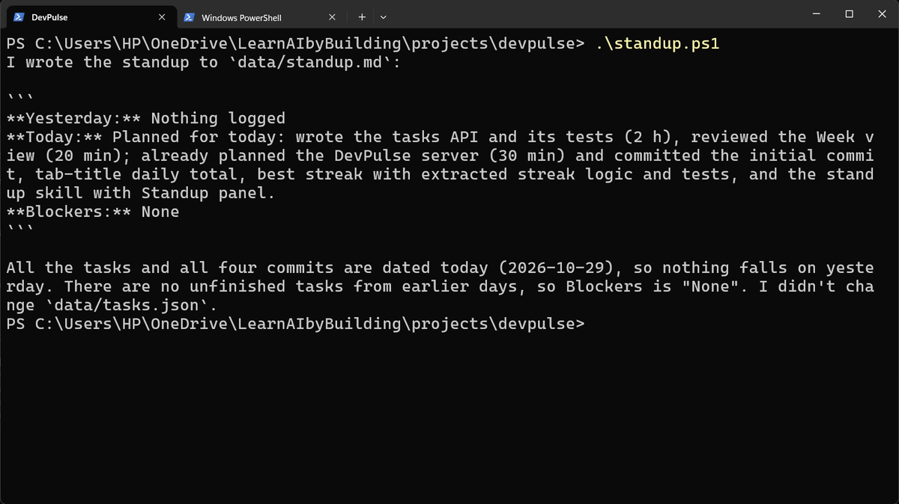
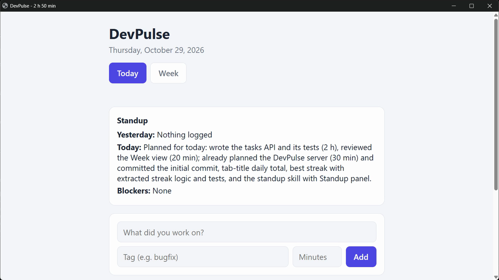

The standup should be ready before you are
In chapter 7, /standup made the standup one command. But you still open Claude, wait for it, and type the command.
Say you want the standup ready the moment you sit down. Nobody opens a chat at 8 in the morning to ask for it.
Can Claude Code do a job without a chat window at all?
One request, no chat: claude -p
Add -p to claude and it runs one request, prints the answer, and exits. This is called headless mode. You can also send it text from another command with |, the pipe.

Let it use only the tools it needs
A command that runs on its own should do one job, and nothing more. So you list exactly what it may use, with --allowedTools. Here: read files, write files, and run git log.

data/standup.md, and says it did not touch tasks.json.Bash(git log:*) means: any command that starts with git log. Any other command would be refused.
Wrap it in a script
That line is long to type each morning. Ask Claude to put it in a script. Start claude, then:


On a Mac, ask for standup.sh instead, and run it with ./standup.sh.
Run it, then look at the app
Type /exit, then run the script from PowerShell.


Windows Task Scheduler can run standup.ps1 every morning by itself. We do not set that up here, but it is the next step if you want it.
If PowerShell says running scripts is disabled, run powershell -ExecutionPolicy Bypass -File .\standup.ps1. That allows this one run, and changes nothing else.
What headless costs
Each run uses your plan, like any request. And nobody watches it: if the job goes wrong, you find out later. That is why the allowed tools are kept so small.
There is a bigger problem coming. The code has grown, and so far the same Claude that wrote it is the one that checks it. In chapter 9 we get a second pair of eyes.
Quick reference
The prompts from this chapter, ready to copy: every prompt, chapter 8.
| Command or key | What it does | Use it when |
|---|---|---|
claude -p "…" | Runs one request, prints the answer and exits; no chat | A job you want done without opening Claude |
… | claude -p "…" | Sends another command's output in as the text to work on | The input comes from git, a file or a log |
--allowedTools "Read,Write,Bash(git log:*)" | Lets the run use only these tools | A script should do one job, and nothing more |
.\standup.ps1 | Runs the script in this folder | Every morning |
powershell -ExecutionPolicy Bypass -File .\standup.ps1 | Runs it when Windows blocks scripts | You see an execution-policy error |
A one-line report, headless
The goal: use claude -p for a job of your own.
The steps: in your project folder, run: claude -p "How many tasks are in data/tasks.json, and how many minutes in total?" --allowedTools "Read"
Guess first: what happens if you ask it to change a file, with only Read allowed?
One question for you: which job in your week could run every morning without you?
References
Where each command and option on this page comes from. Every screenshot is from our own recording on 29 Oct 2026, Claude Code 2.1.312.
- Anthropic · Run Claude Code programmatically (headless) claude -p: one request, an answer printed, no chat; reading from a pipe; output formats. https://code.claude.com/docs/en/headless
- Anthropic · CLI reference --allowedTools and its patterns, such as Bash(git log:*). https://code.claude.com/docs/en/cli-reference
- Microsoft · about_Execution_Policies Why Windows may block a .ps1 script, and how to allow it. https://learn.microsoft.com/powershell/module/microsoft.powershell.core/about/about_execution_policies
- My own recording · 29 Oct 2026, Windows 11 Both headless commands worked as written in PowerShell; no execution-policy error on this PC.